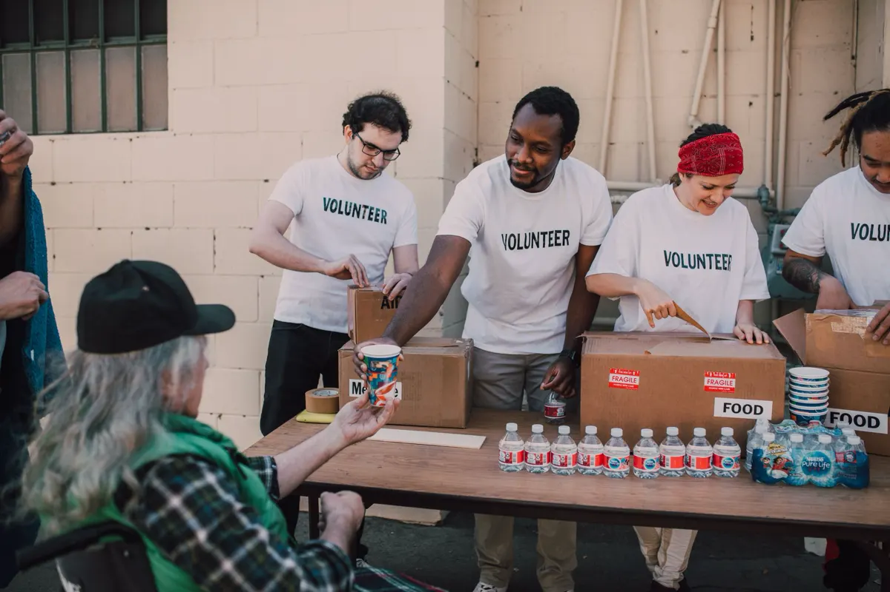

Quando o bairro se encontra, o cuidado ganha força.
Educação, alimentação digna e espaços compartilhados. Conheça as frentes da Rede Aurora e escolha como participar.
Organização fictícia criada para fins acadêmicos.

Encontre sua frente de atuação
Explore os projetos fictícios. Favoritos são salvos apenas neste navegador, sem dados pessoais.
{{ filteredProjects.length }} projeto(s) encontrado(s) · {{ favorites.length }} favorito(s)
Nenhum projeto corresponde aos filtros. Tente outro termo ou selecione todas as categorias.
Conte como quer participar
Simulação acadêmica. Use dados fictícios: nenhum dado pessoal é salvo ou transmitido.
Página não encontrada
Esse endereço não existe no protótipo.
Voltar ao início